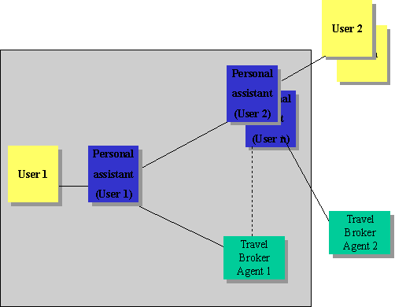
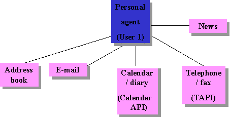
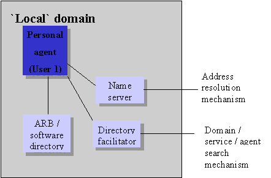
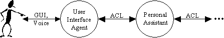
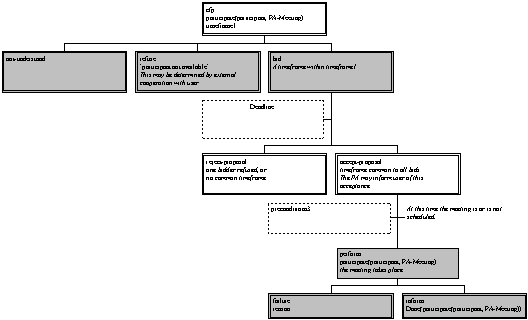
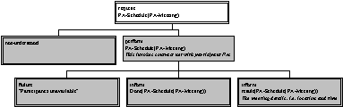
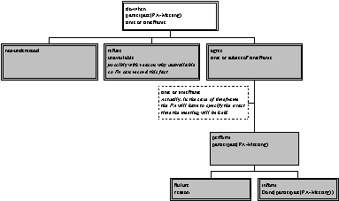

Contents
1 Scope......................................................................................................................................... 1
2 Conformance............................................................................................................................. 1
3 Normative
reference(s)............................................................................................................ 1
4 Term(s)
and definition(s).......................................................................................................... 1
5 Symbols
(and abbreviated terms)............................................................................................ 1
6 Overview
of the Personal Assistant Domain........................................................................... 1
6.1 Introduction............................................................................................................................... 1
6.2 Personal
Assistant Reference Model...................................................................................... 2
6.2.1 Directory
Services.................................................................................................................... 3
6.2.2 Meeting
Scheduling Services................................................................................................... 4
6.2.3 Information
Management Services......................................................................................... 4
6.2.4 Travel
Planning Service........................................................................................................... 4
6.3 Personal
Assistant FIPA'97 Application.................................................................................. 4
6.3.1 Scenario..................................................................................................................................... 4
6.3.2 System
Architecture................................................................................................................. 5
6.4 FIPA
technologies used............................................................................................................ 7
6.4.1 Agent
Management.................................................................................................................. 7
6.4.2 Agent
Communication Language............................................................................................. 7
6.4.3 Agent
/ Software Integration.................................................................................................... 8
6.4.4 Personal
Travel Assistance...................................................................................................... 8
7 Detailed
Specification............................................................................................................... 8
7.1 Informal
Description of PA Content Language....................................................................... 8
7.2 Concrete
Syntax of PA Content Language............................................................................. 9
7.3 Interaction
Protocols.............................................................................................................. 10
7.3.1 Negotiating
Meeting Details (normative)............................................................................. 10
7.3.2 Scheduling
a Meeting (informative)...................................................................................... 11
8 Examples................................................................................................................................. 12
9 References.............................................................................................................................. 12
Foreword
The Foundation for Intelligent Physical Agents
(FIPA) is a non-profit association registered in Geneva, Switzerland. FIPA’s
purpose is to promote the success of emerging agent-based applications,
services and equipment. This goal is pursued by making available in a timely
manner, internationally agreed specifications that maximise interoperability
across agent-based applications, services and equipment. This is realised
through the open international collaboration of member organisations, which are
companies and universities active in the agent field. FIPA intends to make the
results of its activities available to all interested parties and to contribute
the results of its activities to appropriate formal standards bodies.
This specification has been developed through
direct involvement of the FIPA membership. The 35 corporate members of FIPA
(October 1997) represent 12 countries from all over the world
Membership in FIPA is open to any corporation
and individual firm, partnership, governmental body or international
organisation without restriction. By joining FIPA each Member declares himself
individually and collectively committed to open competition in the development
of agent-based applications, services and equipment. Associate Member status is
usually chosen by those entities who do want to be members of FIPA without
using the right to influence the precise content of the specifications through
voting.
The Members are not restricted in any way from
designing, developing, marketing and/or procuring agent-based applications,
services and equipment. Members are not bound to implement or use specific
agent-based standards, recommendations and FIPA specifications by virtue of
their participation in FIPA.
This specification is published as FIPA 97
ver. 1.0 after two previous versions have been subject to public comments
following disclosure on the WWW. It has undergone intense review by members as
well non-members. FIPA is now starting a validation phase by encouraging its
members to carry out field trials that are based on this specification. During
1998 FIPA will publish FIPA 97 ver. 2.0 that will incorporate whatever
adaptations will be deemed necessary to take into account the results of field
trials.
Introduction
This
FIPA 97 specification is the first output of the Foundation for Intelligent Physical
Agents. It provides specification of basic agent technologies that can be
integrated by agent systems developers to make complex systems with a high
degree of interoperability.
FIPA
specifies the interfaces of the different components in the environment with
which an agent can interact, i.e. humans, other agents, non-agent software and
the physical world. See figure below

Figure 1 — Outline View of Agent Interaction
FIPA produces two kinds of specification
¾
normative specifications that mandate the external
behaviour of an agent and ensure interoperability with other FIPA-specified
subsystems;
¾
informative specifications of applications for guidance
to industry on the use of FIPA technologies.
The first set of specifications – called FIPA 97 – has
seven parts:
¾
three normative parts for basic agent technologies:
agent management, agent communication language and agent/software integration
¾
four informative application descriptions that provide
examples of how the normative items can be applied: personal travel assistance,
personal assistant, audio-visual entertainment and broadcasting and network
management and provisioning.
Overall, the three FIPA 97 technologies allow:
¾
the construction and management of an agent system
composed of different agents, possibly built by different developers;
¾
agents to communicate and interact with each other to
achieve individual or common goals;
¾
legacy software or new non-agent software systems to
be used by agents.
A brief illustration of the FIPA 97 specification is
given below
Part 1 Agent Management
This part of FIPA 97 provides a normative framework
within which FIPA compliant agents can exist, operate and be managed.
It defines an agent platform reference model containing
such capabilities as white and yellow pages, message routing and life-cycle
management. True to the FIPA approach, these capablities are themselves
intelligent agents using formally sound communicative acts based on special
message sets. An appropriate ontology and content language allows agents to
discover each other’s capabilities.
Part 2 Agent Communication Language
The FIPA Agent Communication Language (ACL) is based
on speech act theory: messages are actions, or communicative acts, as
they are intended to perform some action by virtue of being sent. The
specification consists of a set of message types and the description of their
pragmatics, that is the effects on the mental attitudes of the sender and
receiver agents. Every communicative act is described with both a narrative
form and a formal semantics based on modal logic.
The specifications include guidance to users who are
already familiar with KQML in order to facilitate migration to the FIPA ACL.
The specification also provides the normative
description of a set of high-level interaction protocols, including requesting
an action, contract net and several kinds of auctions etc.
Part 3 Agent/Software Integration
This part applies to any other non-agentised software
with which agents need to „connect“. Such software includes legacy software,
conventional database systems, middleware for all manners of interaction
including hardware drivers. Because in most significant applications,
non-agentised software may dominate software agents, part 3 provides important
normative statements. It suggests ways by which Agents may connect to software
via „wrappers“ including specifications of the wrapper ontology and the
software dynamic registration mechanism. For this purpose, an Agent Resource
Broker (ARB) service is defined which allows advertisement of non-agent
services in the agent domain and management of their use by other agents, such
as negotiation of parameters (e.g. cost
and priority), authentication and permission.
Part 4 - Personal Travel Assistance
The travel industry involves many components such as
content providers, brokers, and personalization services, typically from many
different companies. In applying agents
to this industry, various implementations from various vendors must interoperate
and dynamically discover each other as different services come and go. Agents
operating on behalf of their users can provide assistance in the pre-trip
planning phase, as well as during the on-trip execution phase. A system
supporting these services is called a PTA (Personal Travel Agent).
In order to accomplish this assistance, the PTA
interacts with the user and with other agents, representing the available
travel services. The agent system is responsible for the configuration and
delivery - at the right time, cost, Quality of Service, and appropriate
security and privacy measures - of trip planning and guidance services. It
provides examples of agent technologies for both the hard requirements of
travel such as airline, hotel, and car arrangements as well as the soft
added-value services according to personal profiles, e.g. interests in sports,
theatre, or other attractions and events.
Part 5 - Personal Assistant
One
central class of intelligent agents is that of a personal assistant (PA). It is
a software agent that acts semi-autonomously for and on behalf of a user,
modelling the interests of the user and providing services to the user or other
people and PAs as and when required. These services include managing a user's
diary, filtering and sorting e-mail, managing the user's activities, locating
and delivering (multimedia) information, and planning entertainment and travel.
It is like a secretary, it accomplishes routine support tasks to allow the user
to concentrate on the real job, it is unobtrusive but ready when needed, rich
in knowledge about user and work. Some of the services may be provided by other
agents (e.g. the PTA) or systems, the Personal Assistant acts as an interface
between the user and these systems.
In the FIPA'97 test application, a Personal Assistant
offers the user a unified, intelligent interface to the management of his
personal meeting schedule. The PA is capable of setting up meetings with
several participants, possibly involving travel for some of them. In this way FIPA
is opening up a road for adding interoperability and agent capabilities to the
already established domain of Personal Information Management.
Part 6 - Audio/Video Entertainment & Broadcasting
An effective means of information filtering and
retrieval, in particular for digital broadcasting networks, is of great
importance because the selection and/or storage of one’s favourite choice from
plenty of programs on offer can be very impractical. The information should be
provided in a customised manner, to better suit the user’s personal preferences
and the human interaction with the system should be as simple and intuitive as
possible. Key functionalities such as profiling, filtering, retrieving, and
interfacing can be made more effective and reliable by the use of agent
technologies.
Overall, the application provides to the user an
intelligent interface with new and improved functionalities for the
negotiation, filtering, and retrieval of audio-visual information. This set of
functionalities can be achieved by collaboration between a user agent and
content/service provider agent.
Part
7 - Network management & provisioning
Across the world, numerous service providers emerge
that combine service elements from different network providers in order to
provide a single service to the end customer. The ultimate goal of all parties
involved is to find the best deals available in terms of Quality of Service and
cost. Intelligent Agent technology is promising in the sense that it will
facilitate automatic negotiation of appropriate deals and configuration of
services at different levels.
Part 7 of FIPA 1997 utilizes agent technology to
provide dynamic Virtual Private Network (VPN) services where a user wants to
set up a multi-media connection with several other users.
The service is delivered to the end customer using
co-operating and negotiating specialized agents. Three types of agents are used
that represent the interests of the different parties involved:
¾
The Personal Communications Agent (PCA) that
represents the interests of the human users.
¾
The Service Provider Agent (SPA) that represents the
interests of the Service Provider.
¾
The Network Provider Agent (NPA) that represents the
interests of the Network Provider.
The
service is established by the initiating user who requests the service from its
PCA. The PCA negotiates in with available SPAs to obtain the best deal
available. The SPA will in turn negotiate with the NPAs to obtain the optimal
solution and to configure the service at network level. Both SPA and NPA communicate
with underlying service- and network management systems to configure the
underlying networks for the service.
One central class of intelligent agents is
that of a personal assistant (PA). A personal assistant is a software agent
that acts semi-autonomously for and on behalf of a user, modelling the
interests of the user and providing services to the user or other people and
PAs as and when required. These services include managing a user's diary,
filtering and sorting e-mail, managing the user's activities, locating and
delivering (multimedia) information, and planning entertainment and travel.
Some of the services may be provided by other agents or systems, the Personal
Assistant acts as an interface between the user and these systems.
In
the FIPA'97 test application, a Personal Assistant offers the user a unified,
intelligent interface to the management of his personal meeting schedule. The
PA is capable of setting up meetings with several participants, possibly
involving travel for some of them. This turns the PA into a multi-agent
application, because the services of the PAs of these other users as well as of
the Personal Travel Assistant system will be needed.
The
design of the PA application is based on a set of scenarios that represent an
increasing level of co-operation needed between the PAs of the users involved.
In the simplest scenario, the initiator of the meeting specifies time and
place, to which other users (PA’s) can conform or not. A more flexible
scenario, however, involves negotiation about time, place, and possibly other
aspects of the proposed meeting (such as attendance).
These
scenarios exercise the Agent Communication Language, as well as the Interaction
Protocols adopted by FIPA. Also Directory Facilitators, Agent Name Servers, inter-domain
address resolution, and possibly one or more Agent Request Brokers to interface
with non-FIPA compliant software are used. The PA application uses at least one
other FIPA test application, viz. the Personal Travel Assistant.
1
Scope
This part of the FIPA 97 specification defines
one of the four test applications that serves as an initial test of the
technology-oriented normative parts of the FIPA 97 specification (Parts 1,2,
and 3).
2 Conformance
Methodologies for conformance of an implementation
to this specification will be published in a later document.
FIPA TC1:1997, International standard
for the inter-operation of software agents – Part 1: Agent Management.
FIPA TC2:1997, International standard
for the inter-operation of software agents – Part 2: Agent Communication
Language
FIPA TC3:1997, International standard
for the inter-operation of software agents – Part 3: Agent/Software Integration
ISO 8601:1988, Data elements and
interchange formats – Information interchange – Representation of dates and
times
ISO 8601:1991, Technical Corrigendum 1,
Data elements and interchange formats – Information interchange –
Representation of dates and times
versit:1996, vCalendar – The Electronic
Calendar and Scheduling Exchange Format, Version 1.0,(maintained by the
Internet Mail Consortium)
User
The human
user of a personal assistant. Usually, there is one personal assistant
to a user.
User Interface Agent
A software
agent which translates services from a user interface (e.g. graphical or
speech-based) into ACL.
Personal Assistant (PA)
A software
agent dedicated to and acting on behalf of a user. There is usually one
user to a personal assistant.
Personal Travel Assistant (PTA)
A software
system providing assistance in planning and execution of trips.
Travel Broker Agent (TBA)
A software
agent acting as the front-end to the PTA system, which handles travel queries.
vCalendar
The
generic term for an electronic, virtual collection of calendaring and scheduling
information that can be transferred between computers, PDAs, or other
electronic devices through telephone lines, or e-mail networks, or infrared
links. How, when, why, and where vCalendar are used depends on the applications
developed utilising a vCalendar.
PA: Personal Assistant
PTA: Personal Travel Assistance
API: Application Programming Interface
UTC: Universal Time Coordinated; also known
as UCT, for Universal Coordinated Time
One central class of intelligent agents is that of a
personal assistant (PA). A personal assistant is a software agent that acts
semi-autonomously for and on behalf of a user, modelling the interest of the
user and providing services to the user or other people/PAs as and when
required.
A personal assistant is like a secretary, it accomplishes
routine support tasks to allow the user to concentrate on the real job, it is
unobtrusive but ready when needed, rich in knowledge about user and work.
The notion of a personal assistant is very open-ended. There
are many internal and external functions and services that can and will be used
to provide and extend a Personal Assistant's basic functionalities. In fact,
such openness to new services is a critical requirement where interoperability
of PA's functions/services is desirable. The use of agent technology to support
the Personal Assistant helps in achieving this requirement.
Examples of such functions/services include:
¾ managing a user's diaries (e.g.,
meeting scheduling)
¾ filtering and sorting mails (e.g.,
electronic mails)
¾ managing a user's desktop
environment (e.g., file system)
¾ managing a user's activities, plans
and tasks (e.g., workflow)
¾ locating and delivering (multimedia)
information
¾ recommending entertainment (e.g.
movies, restaurants, theatres)
¾ purchasing desired items
¾ planning travel, etc.
Whereas this specification focuses on the generic
requirements for the personal assistant application, other FIPA application
scenarios - especially Personal Travel Assistance (PTA) and Audio-Visual
Entertainment and Broadcasting - also include the notion of personal assistance
for specific applications.
In particular, the PTA service is different from the
Personal Assistant service in the following sense. PTA is an integrated system
which spans a particular market segment of the electronic marketplace. On the
other hand, the PA provides a user-oriented front-end to a wide variety of
different services, one of which may be the PTA travel service.
In this section, we first describe the general model of the
Personal Assistant domain as adopted by FIPA, then introduce the particular
application, that of scheduling meetings, chosen for the FIPA'97 Personal
Assistant application. The next section will provide the detailed specification
of the application. A field trial will verify the applicability and feasibility
of the specification with regard to the Personal Assistant domain; the details
and underlying assumptions of the PA field trial are provisionally described in
[FIPA Document fipa7607].
In general, a personal assistant comprises:
¾ Intelligence and associated
capabilities such as rationality (reasoning and planning) and
adaptability/learning.
¾ Knowledge including facts, rules and
adapted/learned knowledge for and about an end-user.
¾ Interaction capabilities and
facilities with the user, other agents and software/hardware
services/functions.
¾ The services/functions and their
procedures for the agent to work with them.
The scope of this composite is limited to the tasks which
are given by the user as goals and preferences for behaviour. Other agents will
also exist and interact with the personal assistant, but such other agents will
not tend to represent particular user's preferences, or access authority and
other differentiators. The composite is visualised in the following reference
model.
Figure 2 — Personal
Assistant Reference Model
The reference model includes the following
interfaces/protocols of interaction that are candidates for standardisation.
1)
User-Agent Dialogue
2) Multi-Modal User-Agent Interface
3) Agent-Agent Communication Interface
4) Protocols for Agent-Agent
Interaction
5)
Agent-Software
Interfaces
6) Agent-Software Communication
Protocols
7)
Agent-Functions
Interfaces
8)
Function
Interoperability Interfaces/mechanisms
Multi-modality is the ultimate goal for human-agent
interfaces. As a user interacts with a real personal assistant, he/she can
speak face-to-face with the assistant or over the phone. Obviously,
unconstrained natural language comprehension is also desirable. However, as
first steps toward this general goal, "multi-modal" interaction is
taken not as requirement for all agents to support all modalities, but merely
that any single application should be able to select the one or more modalities
required for the application. The composition of the personal assistant should
be media-independent in order to allow for this choice, and otherwise provide
the multi-modal conversions required such as converting text to speech in order
to pass information over the phone.
In order to provide some concrete examples, the following
scenarios serve to expose the basic PA's functions/services needed.
One of the basic functions of a PA is the management of the
user's directory. This directory includes other people's/organisations'
telephone numbers, addresses and personal and useful information about them.
This information facilitates responses the PA may provide to user's needs in an
intelligent way, based on the context of the request. For example, if the user
asks to call an organisation and the PA by reference to the opening and closing
time notices that the call cannot be made, it will suggest alternative actions
by inferring the user's possible intentions on the basis of the services
provided by the organisation. A request for a call to a specific travel agency
out of opening hours may result in the PA suggesting contacting a 24-hour call
centre of an airline company.
The personal assistant includes, obviously, a calendar
facility, that among other things can be used for scheduling of meetings, and
negotiation with users and other agents. The functionality includes:
¾ Identifying a mutually appropriate
time for all participants to attend a meeting
¾ Reserving an appropriate venue for
the meeting
¾ Organising associated facilities
(e.g., lunch, OHP, etc.)
¾ Issuing reminders to participants
¾ Handling any problems which might
arise at a later date
¾ Cancelling meetings.
This is a very large and nebulous set of tasks but also
addresses one of the most critical needs for intelligent personal assistants.
Most professionals are now inundated with too many sources of information,
generally this is called "information overload". An agent can serve
to semi-autonomously filter, sort, or otherwise respond to all these sources to
help off-load some of the more mundane tasks these professionals now must do
themselves. Such task include:
¾ E-mail and news filtering (such as
"junk" mail or news appends)
¾ Sorting and prioritising all sorts
of received information
¾ Automatically responding or
forwarding information to another user
A key aspect of such information management is not just
filtering out the low priority information, but also providing the timely
delivery of high priority items - anywhere, anytime, anyhow. Such delivery is
dependent on the user's location, media/equipment limitations, and user
preferences. For instance, an agent can be instructed to deliver important
e-mail to an end-user even if the user only has a mobile phone by converting
the text to speech. Of course, this same text-to-speech delivery of e-mail over
a mobile phone can be applied to any text-based information source such as NNTP
news, stock quotes, etc. Furthermore, given the cost of mobile phone
connectivity, other technologies such as text summarisation can be employed,
for most efficient delivery, to save the users time and cost. The provision of
such summarisation and media to media transformation could be provided, for
example, via external services.
Even under the most constrained situations, such as the user
only having a pager, a personal assistant can at least notify the user about
the existence and accessibility of an important new multimedia document. Even
though the pager device cannot deliver the information, the personal assistant
can notify the user of the appropriate equipment in the locality of the user
that is available where the multimedia document could/would be sent to.
A less well-developed but equally important aspect of
information management is the personal storage and retrieval of information.
Even personal computer storage is becoming difficult to manage. Files are often
duplicated, directory structures are haphazard, and the file systems themselves
does not provide rich indexing and content search facilities. Here, a personal
assistant can be asked to file and retrieve documents or even isolated bits of
information, much like a personal secretary manages paper-based documents in
the office.
As an example of an external service which can be accessed
by a PA, we briefly mention travel planning.
A personal assistant can assist in planning the user's trip
by interacting with the user, other agents and external directory services
(such as yellow pages) and providing an appropriate plan of an intended trip
and other guidance services. See the description of the FIPA'97 Personal Travel
Assistance application for more details. In particular, the PA may assume much
of the functionality of the Personal Travel Assistant agent.
The chosen scenario is that of arranging meetings among
several participants, located across companies and using different calendar
management systems. This has been chosen for several reasons:
¾ The scenario is instantly applicable
to real-life
¾ Current solutions are unwieldy and
proprietary, making integration across networks and other services difficult
¾ The scenario can be easily extended
to incorporate further services
¾ This class of application has been
widely studied, with many agent-based approaches (cf. [Kozieriok & Maes, 1993])
The scenario lends itself well to agent technology, due to
the need for
¾ User profiling
¾ Integration of heterogeneous
software
¾ Action on a user's behalf
(semi-autonomy)
¾ Local control (in particular, of the
user's calendar)
The selected service is an integration of meeting scheduling
and travel assistance. The user asks the agent to set up a meeting with several
participants. Because the meeting may involve travelling for some of the
participants, travel planning forms part of the meeting scheduling.
In this test application, the Personal Assistant provides a
single unified interface to the user, and is represented as a single agent,
even though it may actually be composed of several agents.
Each user is represented by a Personal Assistant. These PA’s
negotiate with each other to find an adequate meeting place and time. They
interact with Travel Broker Agents (TBAs) to find out about travel schedules
etc.

Figure 3 — Agent
Interactions in Personal Assistant Application Scenario
The PA may make use of several existing programs to perform
its tasks. A possible set of relevant software for this test application is
shown in Figure 3.

Figure 4 — Integration of External Software
The relationships between the PA and the Agent Management
functions is shown in Figure 4.

Figure 5 — Interaction with Agent Management Entities
FIPA technical committee TC5 is defining a set of scenarios
based on one particular aspect of the Personal Assisant (PA) role, that of
arranging appointments for activities, such as meetings, which involve a number
of participants. The PAs of the participants must cooperate to ensure that the
meeting is arranged for a time and place which is mutually acceptable to all
their users. The PAs may also consult agents offering travel broking services
as defined by TC4.
Basic scenario: User 1 is chairman of a committee, and asks
his PA to arrange a committee meeting.
Subscenario 1: User 1 suggests a specific time, duration and
location for the meeting. The simplest case is that all participants are
required to attend the meeting.
Subscenario 2: User 1 suggests a range of possible times to
start the meeting. The duration and location of the meeting remain specific.
Subscenario 3: User 1 suggests a range of possible times to
start the meeting as well as a set of locations at which the meeting can take
place.
In the scenarios, only those participants which have
personal assistants will be considered in the agent-based negotiation of the
meeting. Other possible interfaces (directly between personal agent and another
human) will not be required.
It is up to the individual PA application to
associate personal assistants with their users. I.e. if the initiator enters a
list of participants to the meeting, the initiator's agent needs to be able to
communicate with the personal assistants of the participants.
The above subscenarios are in order of increasing
sophistication and difficulty of implementation. Further scenarios, which are
not directly under consideration in this specification, could be achieved by
allowing negotiation about the duration and actual participants in the meeting.
A field trial prototype should demonstrate cooperative
meeting arrangement involving several PAs. It should implement at least the
functionality required by the simplest subscenario, and preferably more. One or
more of the PAs should make use of travel planning services provided by a PTA
field trial system. It is preferable that interoperability of at least two
independently-designed and implemented types of PA be demonstrated.
The agents in the system must communicate using an agent
communication language compliant with the FIPA specification. The messages must
be delivered using an implementation of a FIPA message service. The system must
be supported by at least one Directory Facilitator (DF, yellow pages) and Agent
Name Server (ANS, white pages). However, it is preferable that more than one
domain is involved and hence more than one DF and ANS and that inter-domain
address resolution, message routing and 'yellow pages' searching be
demonstrated.
Certainly further scenarios in the area of personal
assistance may be defined and developed.
Because the test application is primarily meant to provide
an evaluation and validation of the normative parts of the FIPA specification,
it is here elaborated which parts of the specification are actually used within
this application.
This application makes use of the Directory Facilitator as
specified in Part 1 and, as such, requires agents to register with the DF
according to the mandatory specification given in Part 1 Section 9.2.5
register-agent and 9.2.6 deregister-agent Furthermore, the following optional
attributes are also to be used in the Personal Assistant application:
¾
search(Section 9.2.2)
The particular ontology used and specific representation of
these attributes will be defined in the field trial.
This application makes use of the ACL as specified in Part 2
and, as such, requires agents to communicate with each other according to the
ACL specification. In particular, the following communicative acts are used in
this application:
¾ cfp, accept-proposal,
reject-proposal,not-understood,propose,refuse,inform,failure,perform
Furthermore the FIPA-Contract-Net and FIPA-Request
interaction protocols are used, thus, personal assistants conforming to this
specification must be capable of handling these protocols.
Although the FIPA 97 specification does not specifically
address the issues of Human-Agent Interaction, we support the position that
humans may be viewed as agents in their own right, and that their interaction
between software or physical agents may also be accomplished using ACL. Since
humans do not speak ACL directly, some sort of translation service from a
user-friendly interface (e.g. graphical or speech-based) into ACL is required
(cf. Figure 6). This may be accomplished by supplying a special User
Interface Agent. It is recommended, but not necessary, that a particular PA
implementation provide such an ACL-based interface to the user. In particular,
experience gained from this approach will benefit future standardisation
efforts in this area.

Figure 6 — Agent-Human
Interaction via User Interface Agent
6.4.2.2
Contents
of Interactions
Thus, the following communicative acts between users and
their personal assistants could be used:
a)
U
-> PA : give task to arrange meeting (including reporting requirements)
b)
PA
-> U: progress status of task, at least success or failure (with reasons)
c)
U
-> PA: permission to commit to meeting
d)
PA->U:
request for permission to commit
e)
PA ->
U: inform commitment made
f)
U
-> PA: degree of delegation authority
As a user's calendar is private to the user and his Personal
Assistant, the software wrapping technology specified in Part 3 is not
currently used in this application. However, a Personal Assistant may access
the following existing software directly via the appropriate interfaces:
¾ diary or calendar management system:
requirements should be identified, they will probably be met by a Calendar API
¾ address book: basic general-purpose
database
¾ e-mail / fax:
¾ PA can send messages to another user
who has no PA
¾ PA might be able to interpret
structured e-mail messages
¾ TAPI (for communicating via
telephone with the user)
Participants in a meeting may be required to travel to the
location of the meeting, in which case the PA may access a PTA system as
specified in Part 4 to arrange a travel plan.
This section presents the detailed specification of the
FIPA'97 Personal Assistant application scenario.
The primary object in the PA Application is the action PA-Meet. This action is something a
human participant in a meeting must carry out, and is thus, the primary subject
of negotiation among the humans' Personal Assistants. As there is no standard
ontology of actions or objects we must confine the specification to the minimal
requirements of PA.
It is suggested that a PA implement the PA-Schedule action, which takes a
meeing as its argument. A PA can be ordered to perform this action by the user
via the user interface agent. The action in turn may triggers the FIPA-ContractNet interaction protocol,
as applied to the special action PA-Participate,
which, conceptually, is performed by the participants of the meeting.
It has been decided to adopt the vCalendar format is to be
used for the representation of meeting objects. The resultant confirmed
meetings which have been confirmed after negotiation among the personal
assistants will be represented entirely conformant to Version 1.0
specification, in order to enable straight-forward integration with systems
using vCalendar. In particular, the following mandatory parameters of vCalendar
are supported by the PA application as follows:
VERSION: 1.0
CATEGORIES: -
implementation specific, can be
¾ specified by human initiator,
¾ X-FIPA-Test for meetings which are
not actually supposed to occur (e.g. for testing and demo purposes)
¾ given a default value (e.g. X-FIPA-Meeting) by the PA
DESCRIPTION: - implementation
specific, can be
¾ specified by human initiator,
¾ given a default value (e.g. X-FIPA-Meeting) by the PA
SUMMARY: -
implementation specific, can be
¾ specified by human initiator,
¾ given a default value (e.g. X-FIPA-Meeting) by the PA
PRIORITY: - implementation
specific, can be
¾ specified by human initiator,
¾ given a default value (e.g. 0) by
the PA
Also, the following optional parameters of vCalendar are
required for the PA application:
ATTENDEE;ROLE=ORGANIZER:John Doe for human initiator who is attending
ATTENDEE:John Doe for other participants
SEQUENCE: initially 0,
incremented upon confirmation
UID: - implementation
specific, globally unique identifier
STATUS: CONFIRMED(when the meeting has been confirmed accept-proposal)
The following optional parameters of vCalendar are also
optional for the PA application:
LOCATION: PTA-compliant
location designator. If location is given, the PA must/may be able to schedule
the required trip to the location.
The following extensions to vCalendar are required for PA:
X-FIPA-ORGANIZER: for human initiator (whether attending or not)
It is, however, necessary to slightly modify Version 1.0 of
the vCalendar specification for representing meetings under ongoing
negotiation. The modifications are as follows:
DTEND: - UTC (if
specified by human initiator) or X-FIPA-UnderNegotiation (if meeting start/end times are to be negotiated)
DTSTART: - UTC (if
specified by human initiator) or X-FIPA-UnderNegotiation (if meeting start/end times are to be negotiated)
STATUS: UNDER NEGOTIATION (in cfp) or CONFIRMED (in
accept-proposal)
The primary requirement of the content language is the
representation of meetings, trips and the actions of scheduling the meeting (as
carried out by the initiator's PA) and the action of participating in the
meeting (as carried out by the human participants). Due to its simplicity,
standard s-expression syntax is chosen.
This section describes the concrete syntax of the content
language for the PA application (TC5).
The syntax is expressed in standard EBNF format as
summarised in [FIPA Document fipa7612.doc].
Expressions in the content language appear in the ACL
message format syntax as value expressions of the ":content“ parameter in
the ACL message syntax, specifically as in:
:content "("
PA-content-message Proposition ")" .
The concrete syntax
below further specifies the non-terminalsPA-content-message
and Proposition .
PA-content-message = "("
PA-Action ")".
PA-Action = PA-Meet
| PA-Travel | PA-Schedule .
PA-Meet = "(PA-Meet"
ObjectId PA-Meeting Result Status Agent StartTime Duration Deadline
")" .
PA-Travel = "(PA-Travel"
ObjectId PA-Trip Status Agent StartTime Duration Deadline ")" .
PA-Schedule = "(PA-Schedule"
ObjectId PA-Object Result Status Agent StartTime Duration Deadline
")" .
PA-Object = PA-Meeting
| PA-Trip .
PA-Meeting = "(PA-Meeting"
ObjectId Initiator vCalendarObject Protocol ")" .
TimeInterval =
Time | "[" Time "," Time "]" .
TimeIntervals =
"[" TimeInterval +
"]" .
TimeIntervalTest =
"InTimeInterval(" ObjectId".DTSTART , "
TimeIntervals ") AND" ObjectId".DTEND = "
ObjectId".DTSTART + "
Number .
ObjectId = String |
ObjectId"."String .
Protocol = ":protocol"
String .
Proposition = "true"
| "false" | TimeIntervalTest | ObjectId".LOCATION"|
"(" Proposition ")"
"(eq" Term Term ")"
|
"(and" Proposition
Proposition ")" |
"(or" Proposition Proposition
")" .
Term = NumericalExpression
| Time | String.
Reason = Proposition
.
NumericalExpression = Number
| "(" NumericalExpression ")" |
"(+" NumericalExpression NumericalExpression ")" |
"(-" NumericalExpression NumericalExpression ")" |
"(*" NumericalExpression
NumericalExpression ")"
|
"(/" NumericalExpression
NumericalExpression ")" .
vCalendarObject =
":vCalendarObject" CalendarItem .
CalendarItem = <Specification of vCalendar objects as in the vCalendar
1.0 specification by the IMC and as discussed in Section 7.1> .
AgentReference = <Universal
Agent Locator as specified in FIPA 97 Specification Part 1]> .
Time = <ISO8601-Time;
UTC-Format e.g. 19971010T123000Z> .
String = <As
specified in FIPA 97 Specification Part 2> .
Number = <As
specified in FIPA 97 Specification Part 2> .
The interaction protocols to be used for scheduling meetings
are described in this section. On a normative basis, are the protocols used
between personal assistants to determine the times and locations of the
meetings. On an informative basis are the protocols which may be used between
the users and their personal assistants for triggering the meeting scheduling
process and confirming the meeting.
The FIPA-ContractNet
interaction protocol is used for negotiation of meetings (more accurately,
negotiation about the action of participating in the meetings) among the
personal assistants. Whereas the intent of the original contract net protocol
[cf. Davis&Smith] is to select the best bid(s) of a set of submitted bids,
here the accept-proposal message is used only if all bids (i.e. time frames to
attend the meeting) have a time frame in common. This is the timeframe that is
chosen. As the bids of a contract net imply firm commitment, the PAs need to
check with their users the initiator agent.

Figure 7 — FIPA-ContractNet
(applied to meeting negotiation)
If the interaction between the user and his/her PA is also
modelled using ACL, an Order
protocol can be used in order to initiate negotiation of a meeting:

Figure 8 — PA-Order
(applied to meeting scheduling)
7.3.3 Confirmation with User (informative)
If the interaction between the user and
his/her PA is also modelled using ACL, the FIPA-RequestWhen protocol can be used by the PA to confirm the
availability of the user at a suggested meeting time.

Figure 9 — FIPA-RequestWhen
(applied to meeting scheduling)
We give here a concrete example. Suppose John Doe wants to
schedule an hour long meeting with some colleagues during some time on a given
day. Then John Doe's personal assistant will send the following message to the
personal agents of the desired participants:
(cfp
:sender UA-Donald
:receiver UA-Wiet
:content ((PA-Meet
:ObjectID WietMeet123
:Agent Hans Mustermann
:PA-Meeting
(BEGIN:VCALENDAR
VERSION: 1.0
BEGIN:VEVENT
UID: 123
SUMMARY: FIPA Demo
ATTENDEE:Hans Mustermann
ATTENDEE;ROLE=ORGANIZER:John Doe
LOCATION:Siemens MchP 53.512
CATEGORIES: X-FIPA-Test
DESCRIPTION: This is just a test meeting. Please do
not attempt to attend it.
SEQUENCE: 0
PRIORITY: 0
DTSTART: X-FIPA-UnderNegotiation
DTEND: X-FIPA-UnderNegotiation
STATUS: UNDER NEGOTIATION
X-FIPA-ORGANIZER: John Doe
END:VEVENT
END:VCALENDAR
)
)
(InTimeIntervals(WietMeet123.PA-Meeting.DTSTART,[[1200,1800]]) Ù
DTEND =
DTSTART + 60 )
)
:ontology FIPA-PA
:conversation-id UA-Donald345
:protocol FIPA-ContractNet
:reply-with Response123
:reply-by 101097T1300
)
[Kozieriok & Maes, 1993] R.
Kozieriok, P. Maes: A learning interface agent for scheduling meetings, in:
International Workshop on Intelligent User Interfaces, Orlando, Fl.,
ACM-SIGCHI, ACM Press, 1993.